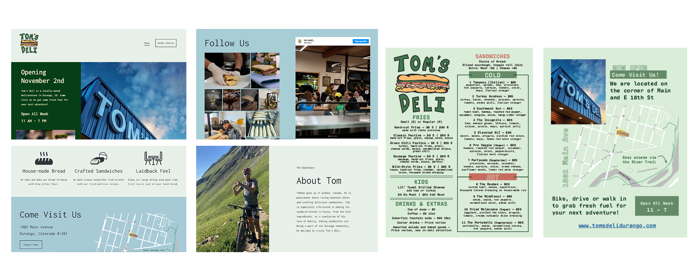

Print and Web Design - Tom's Deli
I worked with a local restaurant owner in Durango, Colorado, to develop large-format menu boards, flyer-style menus, website, map and other assorted in-restaurant signage. The client timeline required quick and effective management of edits and reviews. All physical materials were designed to be print-ready, and I worked with the printshop to ensure final quality.